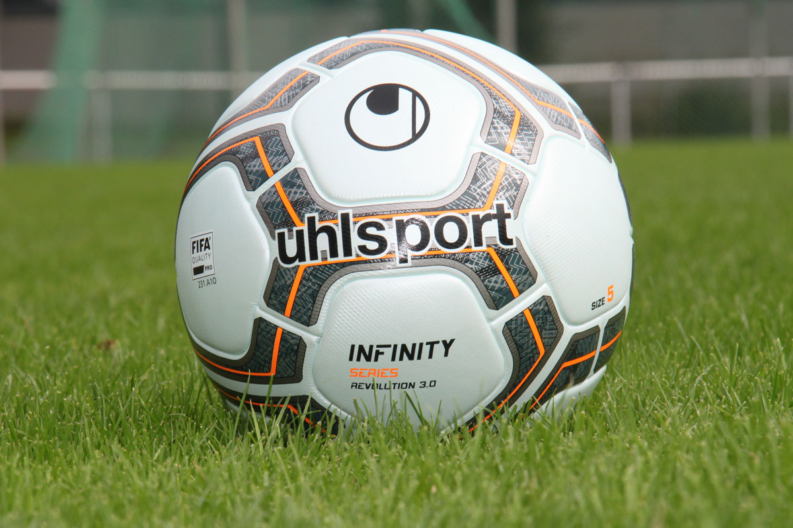

Flamengo e RB Bragantino se enfrentam neste domingo, 20 de setembro de 2026, às 18h30 (de Brasília), pelo Brasileirão. A partida será disputada no Maracanã, em um confronto que reúne equipes em momentos diferentes nos últimos jogos registrados. O Flamengo chega com uma sequência recente mais consistente, enquanto o RB Bragantino busca reagir depois de uma série marcada por equilíbrio e resultados negativos. A transmissão será do Premiere.
O duelo coloca frente a frente o mandante Flamengo e o visitante RB Bragantino em uma rodada na qual cada equipe terá de transformar seu momento recente em desempenho dentro de campo. Embora não tenham sido fornecidos cenários de classificação ou objetivos específicos para a partida, os números dos cinco jogos concluídos registrados ajudam a apresentar o ponto de partida de cada lado para o compromisso no Maracanã.
Flamengo chega com sequência positiva
Nos últimos cinco jogos concluídos registrados, o Flamengo acumulou quatro vitórias, um empate e nenhuma derrota. O recorte mostra uma equipe que atravessa uma fase de regularidade, com apenas um resultado que não terminou em triunfo. Esse desempenho recente cria uma expectativa de atuação firme diante da própria torcida, especialmente em uma partida na qual o time terá o mando de campo.
A sequência também dá ao Flamengo uma referência positiva para o confronto. São quatro vitórias em cinco compromissos, além da ausência de derrotas no período considerado. O retrospecto recente não determina o resultado do jogo, mas indica um momento estatístico favorável para o mandante antes do apito inicial.
RB Bragantino tenta interromper série de resultados irregulares
O RB Bragantino chega ao confronto com uma campanha recente mais equilibrada entre resultados positivos e negativos. Nos últimos cinco jogos concluídos registrados, foram uma vitória, dois empates e duas derrotas. O recorte aponta para uma equipe que alternou dificuldades e capacidade de pontuar, mas que venceu apenas uma vez nesse período.
Com esse cenário, o visitante terá pela frente um adversário que perdeu nenhuma das últimas cinco partidas registradas. A tarefa será buscar uma atuação capaz de reduzir a diferença observada nos números recentes e transformar os empates e a única vitória do período em uma apresentação competitiva no Maracanã. Sem informações adicionais sobre desfalques, estratégias ou escalações, não é possível detalhar mudanças na formação do RB Bragantino.
Prováveis escalações ainda não foram informadas
As prováveis escalações de Flamengo e RB Bragantino não estão disponíveis no contrato editorial desta partida. Por isso, não há nomes de jogadores ou formações a apresentar como expectativa para o duelo. A ausência dessas informações impede a publicação de uma lista nominal sem risco de acrescentar dados não confirmados.
- Flamengo: provável escalação não informada.
- RB Bragantino: provável escalação não informada.
- Técnicos: informações não fornecidas.
Essa é uma distinção importante para o pré-jogo: as escalações acima não representam times oficiais nem uma formação projetada com nomes. O conteúdo disponível permite confirmar o confronto, o horário, o local, a transmissão, a forma recente e o retrospecto na competição, mas não autoriza completar a relação de jogadores ou indicar os treinadores.
Transmissão e informações da arbitragem
O jogo entre Flamengo e RB Bragantino terá transmissão do Premiere. A partida está marcada para as 18h30, no horário de Brasília, e será realizada no Maracanã.
- Jogo: Flamengo x RB Bragantino
- Competição: Brasileirão
- Data: 20 de setembro de 2026
- Horário: 18h30, de Brasília
- Local: Maracanã
- Transmissão: Premiere
- Árbitro: Rodrigo José Pereira de Lima
- Assistentes: Bruno Boschilia e Joverton Wesley De Souza Lima
- VAR: Kléber Ariel Gonçalves Silva
As informações disponíveis para a arbitragem indicam Rodrigo José Pereira de Lima como árbitro, com Bruno Boschilia e Joverton Wesley De Souza Lima na função de assistentes. Kléber Ariel Gonçalves Silva será o responsável pelo VAR. Esses nomes integram o quadro de informações do confronto, ao lado do horário, do estádio e da plataforma de transmissão.
Retrospecto no Brasileirão
O histórico considerado é específico dos confrontos anteriores registrados no Brasileirão. Ao todo, Flamengo e RB Bragantino se enfrentaram 13 vezes no recorte informado. O equilíbrio aparece nos números, embora o Flamengo tenha pequena vantagem no total de vitórias.
- Jogos registrados: 13
- Vitórias do Flamengo: 5
- Vitórias do RB Bragantino: 4
- Empates: 4
Os números mostram uma disputa sem grande distância entre os dois clubes: o Flamengo venceu cinco dos 13 encontros, o RB Bragantino ganhou quatro, e outros quatro terminaram empatados. O retrospecto, portanto, apresenta vantagem mínima do mandante no recorte do Brasileirão, mas também evidencia a quantidade de partidas decididas sem vencedor. Para ampliar o contexto histórico da competição, veja a história do Campeonato Brasileiro.
O que esperar do confronto
O encontro no Maracanã reúne um Flamengo que chega invicto nos cinco jogos concluídos registrados, com quatro vitórias e um empate, e um RB Bragantino que somou uma vitória, dois empates e duas derrotas no mesmo recorte. Essa diferença recente coloca o mandante em posição estatística mais favorável, mas não elimina o equilíbrio observado no histórico direto da competição.
A partida também será marcada pela falta de informações disponíveis sobre as prováveis escalações. Sem nomes de jogadores ou indicações de formação, a análise prévia deve se concentrar nos dados confirmados: o mando do Flamengo, o momento recente das equipes, os 13 confrontos registrados no Brasileirão e a estrutura de transmissão e arbitragem definida para o jogo.
Com bola rolando às 18h30 de 20 de setembro de 2026, Flamengo e RB Bragantino terão no Maracanã o palco para transformar os números do pré-jogo em atuação. O Flamengo tentará sustentar sua sequência positiva, enquanto o RB Bragantino buscará superar o recorte recente de duas derrotas e apenas uma vitória. O equilíbrio histórico acrescenta um elemento de disputa ao duelo, que terá transmissão do Premiere.